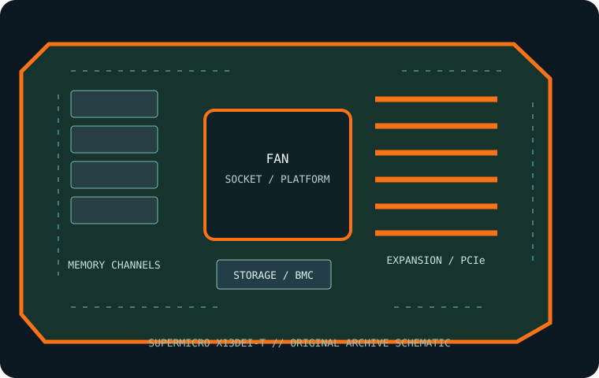

[ INDIVIDUAL COMPONENT // MOTHERBOARDS ]
Supermicro X13DEI-T
Dual-socket LGA4677 server motherboard for 4th/5th Gen Intel Xeon Scalable processors. This record identifies the stated model/revision; confirm the PCB label and use the matching vendor support files.

REVISION WARNING: Similar model names, board revisions and firmware may differ in CPU support, lane routing or connectors. Identify the silkscreen and assembly code before installation or firmware updates.
Specifications
| Catalog subcategory | Workstation and server boards |
|---|---|
| Exact model / era | Supermicro X13DEI-T — Dual-socket LGA4677 server motherboard for 4th/5th Gen Intel Xeon Scalable processors. (2023) |
| CPU and socket / SoC | Two Intel Xeon Scalable processors in LGA4677 sockets; 4th and 5th Gen support depends on board BIOS and exact Supermicro CPU matrix. Use a supported matched pair. |
| Chipset / platform | Intel C741 server chipset. |
| Memory and ECC | Sixteen DDR5 ECC Registered DIMM slots, eight-channel per CPU; up to 4 TB of 3DS ECC RDIMM is listed by Supermicro, while supported speed/rank depend on processor generation and DIMM population. |
| PCIe and form factor | E-ATX (12.1 × 13.05 in); four PCIe 5.0 x16 and two PCIe 5.0 x8 slots, fed by CPU lanes. Confirm the system/riser slot mapping in the board manual. |
| Storage | Eight SATA 6 Gb/s ports, two SATA DOM ports, two M.2 PCIe 4.0 x2 sockets (M-key, 2280/22110) and three MCIO PCIe 5.0 x4 connectors (supporting up to six NVMe drives); validate cabling and shared lanes in the manual. |
| BMC and networking | ASPEED BMC with IPMI remote management and dedicated management LAN, plus onboard high-speed data networking. |
Compatibility and revision notes
Requires two compatible Xeon Scalable CPUs and matching BIOS; one-CPU configuration can disable CPU2-attached PCIe/memory resources. Populate DDR5 ECC RDIMMs separately by socket and channel. Use only matching risers/cables and verify board revision, chassis airflow and CPU heatsink requirements.
Socket type, connector shape, chipset branding and CPU family alone do not establish compatibility. Confirm the exact CPU support list, minimum BIOS, ECC/DIMM type and population, shared PCIe/storage lanes, power inputs and dimensions in the linked model-specific vendor documentation.
Preservation and repair
Record the board revision, serial label, BIOS and BMC versions, MAC addresses, attached risers/cables and test conditions before servicing. Use the vendor's socket procedure, ESD-safe handling and correct chassis airflow; do not cross-flash firmware from a related SKU.
Photograph PCB labels, connector condition and accessories before cleaning. Keep BMC access credentials in secure inventory, and never power the board with loose conductive hardware beneath it.
Sources & further reading
- Supermicro X13DEI-T — manufacturer specifications and product referencePrimary product reference for platform, board configuration and feature summary.
- Supermicro X13DEI-T — manufacturer manual and firmware referenceOfficial 178-page X13DEI-T manual; use with the exact board-revision CPU support list and firmware package.
Manufacturer model-specific documentation takes precedence. Confirm details for the exact printed board revision.